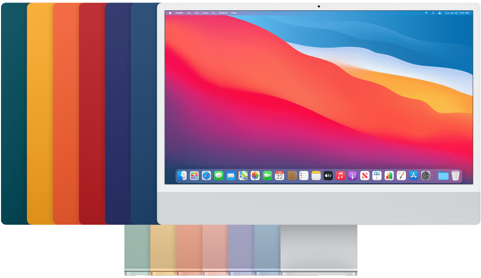
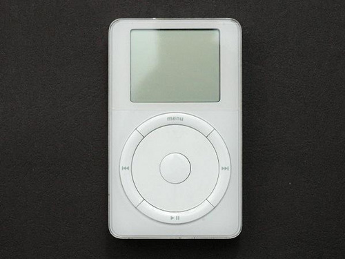
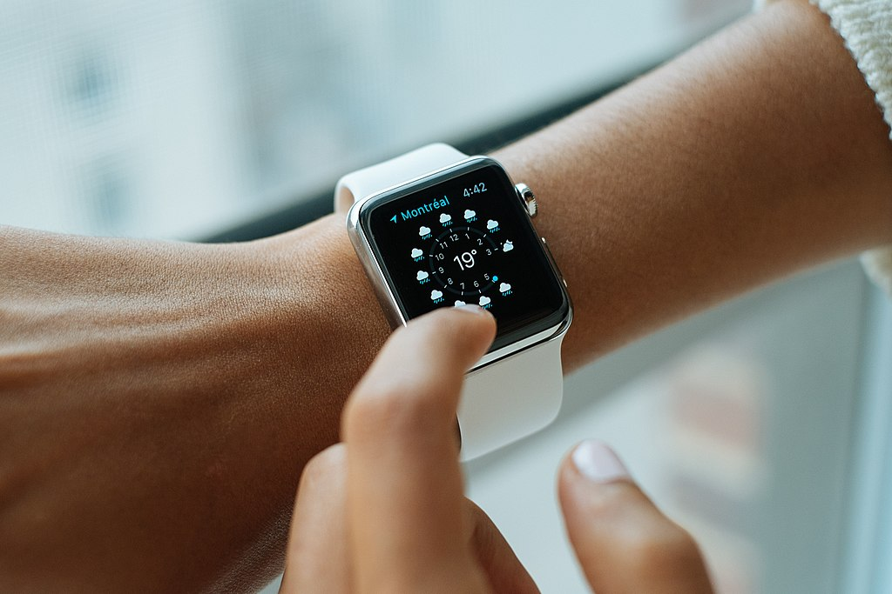
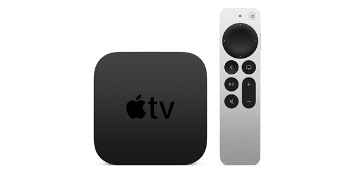
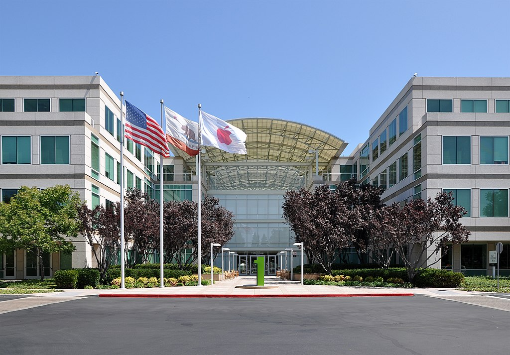
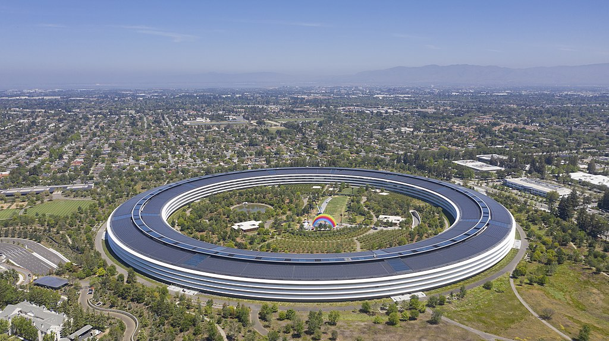

苹果公司
苹果公司，原称苹果电脑公司，是总部位于美国加州库比蒂诺的跨国科技公司，与亚马逊，谷歌、微软和Meta一起被认为是五大技术公司之一，合称为MAMAA。 现时的业务包括设计、开发、手机通信和销售消费电子、计算机软件、在线服务和个人计算机。
重要事件
- 1971年，16岁的斯蒂夫·乔布斯和21岁的斯蒂夫·沃兹尼克经由朋友、前者的高中同学比尔·费尔南德斯介绍而结识。1976年，乔布斯成功说服沃兹组装机器之后再拿去推销，他们的另一位朋友罗纳德·韦恩（Ronald Wayne）也加入，三人在1976年4月1日成立苹果电脑公司。
- 1980年代，当小型企业还在使用Apple II时，苹果感到它需要一个更新、更先进的型号以参与企业用电脑市场。Apple III的设计师被迫遵循乔布斯的极高和有时不切实际的要求，据说乔布斯觉得散热扇“不雅致”因而被省略了，结果导致电脑容易过热，这迫使最早期的型号被回收。
- 2011年8月24日，乔布斯辞去苹果公司首席执行官职位，董事会任命原首席运营官蒂姆·库克为公司的新任首席执行官，乔布斯当选为董事长。2011年10月5日，乔布斯病逝。
主要成就
2010年5月，苹果公司市值超过微软，成为全球市值最高的IT企业[59]在此过程中，苹果公司在全球IT行业的影响力超过微软，并成为全球IT行业的领导者。2011年8月9日周二纽约股市盘中，苹果市值一度达到世界第一。[60]
主要产品
| 产品 | 图片 |
|---|---|
| Mac |  |
| iPod |  |
| iPhone |

|
| iPad |

|
| Apple Watch |  |
| Apple TV |  |
| HomePod |

|
公司总部
苹果公司旧设在库比蒂诺马里亚尼大道（Mariani Ave）20525号一号楼。
新总部位于位于美国加州库比蒂诺苹果园区路1号，土地面积达176英亩（71公顷）。当时仍在建设中的苹果园区于2017年4月向员工开放，取代了于1993年开幕在无限循环1号的原有总部，以解决昔日因旧总部建筑不敷使用而需分散各地办公的问题。
